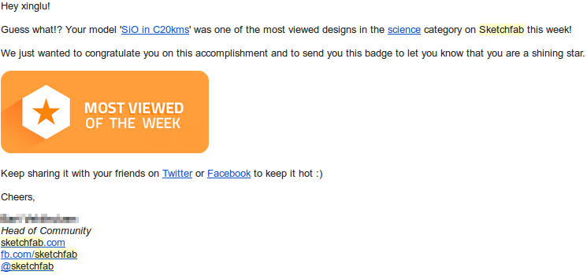
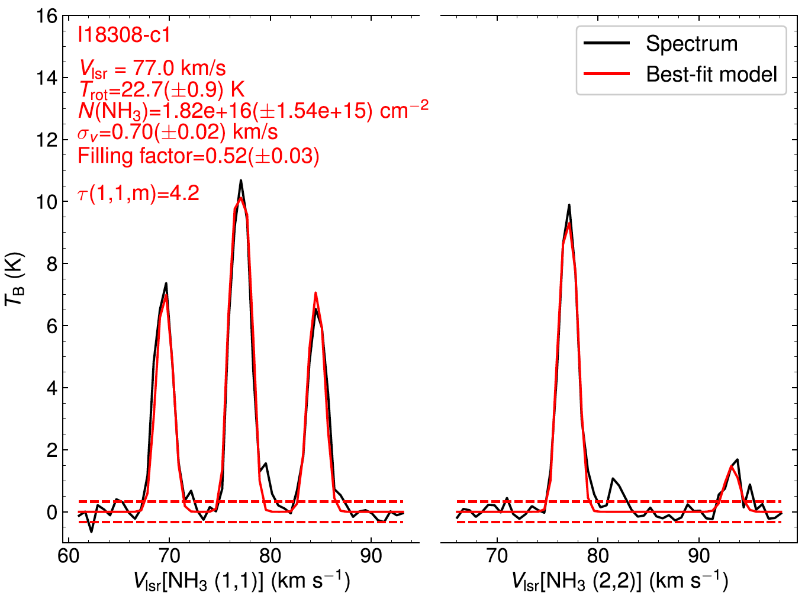
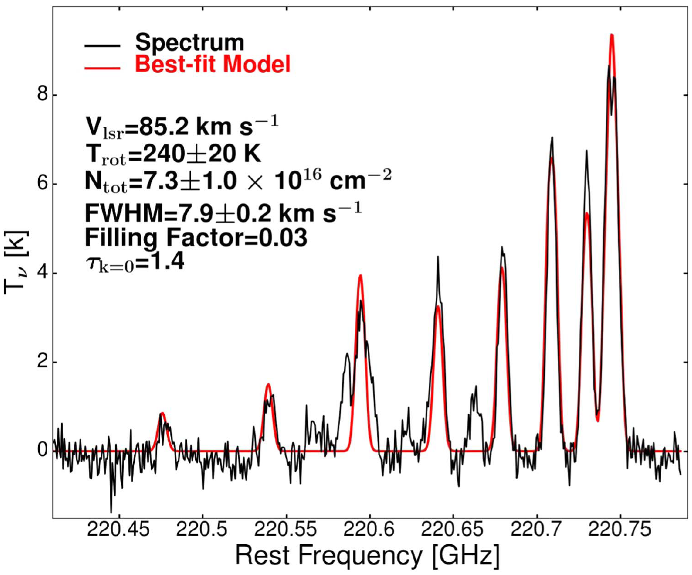

Javascript Applets
Software
Some MIR tricks I learned from my collegues: MIR tricks.
Some Miriad tricks: Miriad tricks.
A simple script to merge single-dish and interferometer data, using the feather task in CASA, adapted from Jens Kauffmann's script: merge.py.
Code
Here are some IDL and Python codes I wrote: TDViz, PyAMOR, Emanon.
TDViz: Three-dimensional Datacube Visualizer
This code is originally a module prepared for the AY201b course tutored by Prof. Alyssa Goodman at Harvard Astronomy Department (see the module website). It can be run with 'python TDViz.py', as long as you have all the required python packages installed. A snapshot of the interface is shown below.

You can select your own FITS files. After you select one, the starting and ending pixels in three axes, and the maximum and minimum values will be updated respectively. The default scene will be the entire datacube. If you want to focus on a smaller region and/or a narrower velocity range, you can change corresponding values and click the 'Plot' button again. You can also do something like exporting a 3D scene or making a GIF movie.

Here is an example of its outcome: a visualizatin of the CO outflows in G28.53-0.25, using published data in my recent paper Lu et al. 2015.
CO outflows in G28.53 by xinglu on Sketchfab
Caution: Firefox may crash when playing this 3D model.
And here is a badge I received from the website... 
It is certain that many known and unknown bugs exist. If you find one, please do not hesitate to contact me, thanks!
Dependencies
This code makes use of python modules including MayaVI, TraitsUI, astropy, numpy, and scipy. Normally you can install one of the popular scientific Python packages and have them all. I use the Canopy package for running and testing. Another choice is the Anaconda package. Both packages are free (or have a free version for academic users).
If you use Anaconda, the module names are different, e.g. in the script you need 'from traitsui.api import View' instead of 'from enthought.traits.ui.api import View'. Ananconda does not include MayaVI by default, you might need to install it first by 'conda install mayavi'. (Thanks to Nimesh Patel for pointing this out!)
PyAMOR: Python script for AMmOnia data Reduction
This code is dedicated to modeling spectra of low level ammonia transitions (between (J,K)=(1,1) and (5,5)) and deriving parameters such as intrinsic linewidth, optical depth, and rotation temperature. The curve fitting is implemented by the lmfit package. It will have the capability of modeling spectra with more than one and up to three velocity components along the line of sight and providing one set of best fitted parameters for each component. For now it can only fit one velocity component across the entire map, and if there are more than one, it will take the highest peak at each pixel to do the fitting. And for now it can only fit two-velocity-components spectra manually, which means you need to visually identify the two velocities and when the S/N is small the fitting may not converge.
What it can do now: For low S/N or low spectral resolution data, use cross-correlation between a model and a regridded spectrum (e.g. 10 times smaller channel width) to find the velocity, then fix it and run the minimization process. For high S/N data, it is ok to let the velocity be a free parameter.
What it will be able to do: 1. Include all five hyperfine components of NH3 (1,1), or even better, all 18 hyperfine lines so that we know the intrinsic linewidth immediately; 2. Include higher transitions like NH3 (4,4), (5,5). 3. Be able to fit multi-velocities. 4. Have an interactive graphic interface.

EMANON: Estimate of Methyl cyanide parameters with NON-linear optimization
It is translated from Roberto Galvan-Madrid's Mathematica code. 'Emanon' is actually 'No name' spelled backwards. I don't know the origin of this word but I learned it in Shinji Kajio's novel Memories of Emanon...
A script to fit CH3CN hyperfine lines and derive linewidth, temperature, and column density.

A Dancing Dophin
You can find it here. Just for fun...